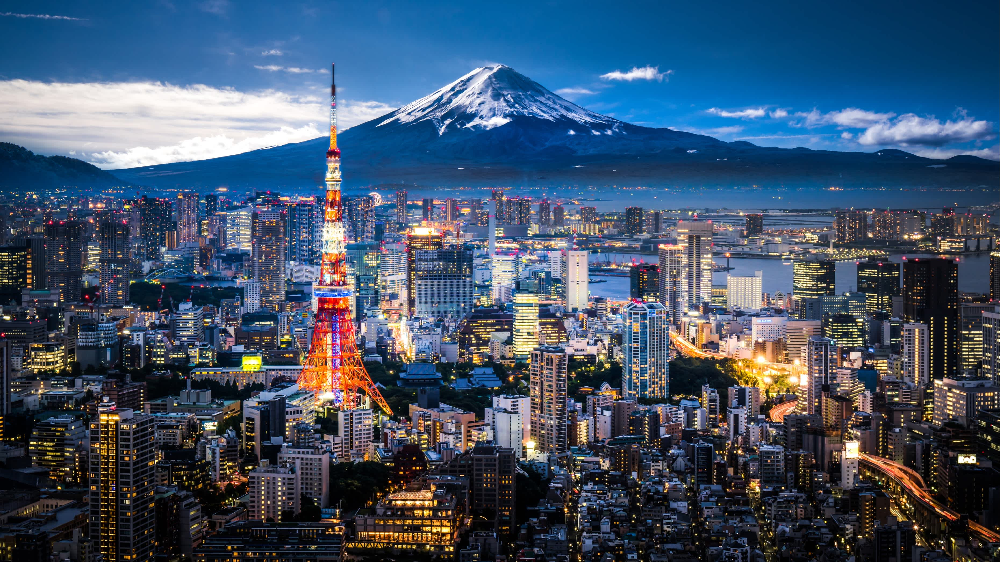

Le Japon offre une richesse incroyable de sites touristiques, mélangeant l'ancien et le moderne, la nature et la technologie. Voici une liste des principales attractions et activités touristiques au Japon, divisée en plusieurs catégories pour mieux explorer les divers aspects du pays.
Villes Majeures
- Tokyo : Une métropole vibrante connue pour ses quartiers comme Shinjuku, Shibuya, et Akihabara, célèbres pour le shopping, la technologie et la pop culture.
- Kyoto : Ancienne capitale du Japon, réputée pour ses temples, ses sanctuaires et ses jardins traditionnels, ainsi que pour le district de Gion, célèbre pour ses geishas.
- Osaka : Connue pour son ambiance décontractée, son château d'Osaka, et sa scène culinaire, notamment le takoyaki et l'okonomiyaki.
- Hokkaido : Appréciée pour ses magnifiques paysages naturels, ses stations de ski en hiver et ses festivals de fleurs en été.
- Okinawa : Un groupe d'îles tropicales connu pour ses plages, ses récifs coralliens, et une culture distincte influencée par son histoire unique.

Sites Historiques et Culturels
- Temple de Kinkaku-ji (Pavillon d'Or) à Kyoto : Un magnifique exemple d'architecture japonaise entouré d'un petit lac.
- Hiroshima Peace Memorial (Genbaku Dome) : Un mémorial aux victimes de la bombe atomique et un symbole de la paix.
- Château de Himeji : Un des douze châteaux originaux du Japon, inscrit au patrimoine mondial de l'UNESCO.
- Village historique de Shirakawa-go : Connu pour ses maisons traditionnelles au toit de chaume dans un cadre montagneux.
Expériences Culturelles
- Assister à une cérémonie du thé : Expérience de l'art traditionnel du thé japonais, particulièrement à Kyoto.
- Participer à un festival : Les matsuri (festivals) offrent une expérience vibrante de la culture japonaise avec des danses, musiques, et nourritures traditionnelles.
- Visiter un onsen : Les sources chaudes naturelles japonaises, où vous pouvez vous détendre dans un bain thermal traditionnel.
Nature et Paysage
- Mont Fuji : Le point culminant du Japon, populaire pour l'escalade en été et admiré pour sa beauté majestueuse toute l'année.
- Vallée de Jigokudani : Où l'on peut voir des macaques japonais se baigner dans des sources chaudes naturelles.
- Jardin Kenroku-en à Kanazawa : Un des trois grands jardins du Japon, célèbre pour sa beauté et son équilibre parfait.
- Gorges de Kurobe : Un des spectacles naturels les plus impressionnants du Japon, accessible par un train pittoresque.
Shopping et Gastronomie
- Déguster des sushis au marché aux poissons de Tsukiji à Tokyo : Un incontournable pour les amateurs de fruits de mer frais.
- Shopping à Ginza, Tokyo : Où des boutiques de luxe côtoient des détaillants traditionnels japonais.
- Explorer la rue Takeshita à Harajuku : Connue pour ses tendances de mode unique et son ambiance jeune et dynamique.